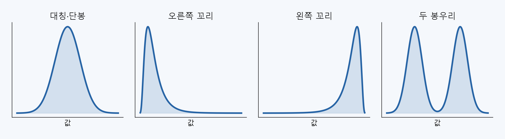
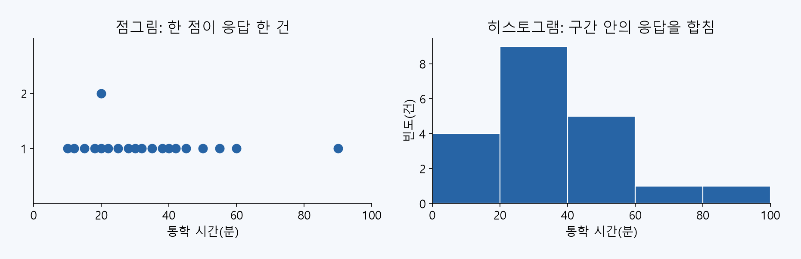
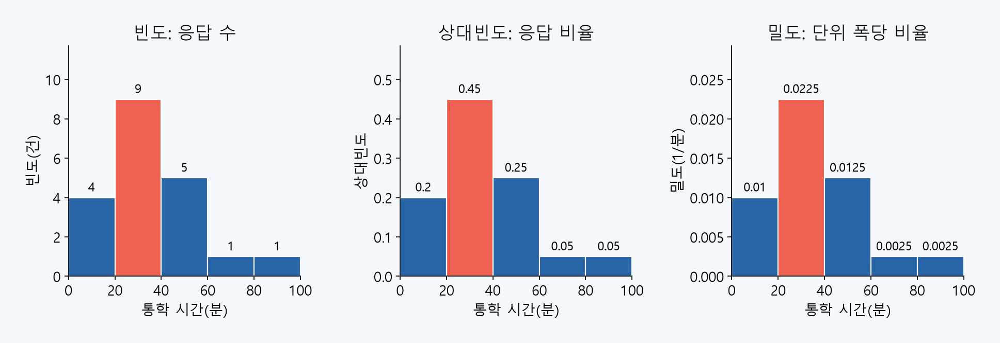
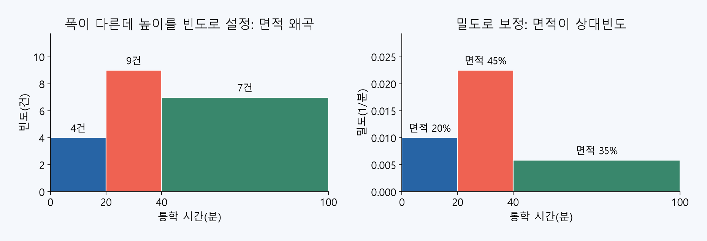
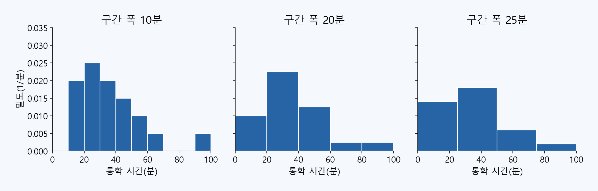
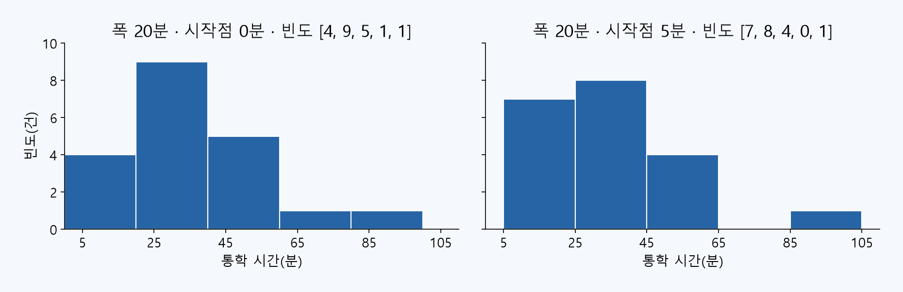

분포를 이해하고, 그림으로 설명하기
4차수 · 줄기와 잎 그림과 히스토그램의 통계학
그림을 그리는 방법에 앞서 무엇을 표현하는지, 높이와 면적을 어떻게 해석하는지 배웁니다.
같은 자료를 여러 그림으로 비교하고, AI에게 요청한 그림이 이론과 맞는지 확인합니다.
오늘의 학습 경로
| 단계 | 답할 질문 |
|---|---|
| 분포의 의미 | 한 숫자로는 무엇을 놓치는가? |
| 표현 방법 | 줄기와 잎 그림과 히스토그램은 무엇을 보존하는가? |
| 축과 면적 | 빈도·상대빈도·밀도는 어떻게 다른가? |
| 구간과 해석 | 폭·시작점·범위가 달라지면 무엇이 바뀌는가? |
개념과 계산 예를 이해한 뒤 Colab에서 확인합니다. 상세 실습 9개는 별도 참고 슬라이드와 노트북에 보존했습니다.
3차수의 검증을 그림으로 확장합니다
3차수에서는 AI가 어떤 응답을 포함해 계산했는지 확인했습니다. 이번에는 어떤 응답을 어떤 구간에 넣어 그렸는지 확인합니다.
- 분포의 모양을 통계 용어로 설명합니다.
- 빈도·상대빈도·밀도를 계산하고 축을 해석합니다.
- 구간 변경에 따른 그림의 차이와 해석의 한계를 설명합니다.
이론과 실습에서 같은 자료를 사용합니다
가상 통학 시간 22건 중 유효 응답은 20건, 시간 미응답은 2건입니다.
10, 12, 15, 18, 20, 20, 22, 25, 28, 30, 32, 35, 38, 40, 42, 45, 50, 55, 60, 90
- 한 행은 가상 학생 한 명의 편도 통학 응답입니다.
- 단위는 분이며 90분도 원자료의 관측값입니다.
- 그림의 비율 계산에서 분모는 유효 응답 n=20입니다. 실제 학생 모집단을 대표하는 표본이 아닙니다.
분포: 값이 어디에 얼마나 나타나는가
**분포(distribution)**는 변수의 값과 그 값들이 나타나는 빈도·비율의 구조입니다.
평균 하나가 같더라도 값이 한곳에 모이거나 두 덩어리로 나뉘는 등 구조가 다를 수 있습니다.
우리는 중심 위치·퍼짐·대칭성·봉우리·떨어진 값을 함께 봅니다. 그림은 이 구조를 드러내는 기술통계의 도구입니다.
관측한 분포와 모집단 분포는 다릅니다
경험분포는 관측된 응답에 같은 비중을 주어 요약한 분포입니다. 유효 응답 20건이면 각 응답은 1/20=5%를 차지합니다. 반복된 값은 건수만큼 비중을 더합니다.
이 자료에서 20분은 두 건이므로 경험적 비율은 2/20=10%입니다.
표본에서 본 비율이 모집단의 참된 비율과 같다고 단정할 수 없습니다. 특히 이 가상 자료는 계산과 해석 연습용입니다.
변수의 종류에 따라 표현이 달라집니다
| 변수 | 의미 | 주로 쓰는 그림 |
|---|---|---|
| 교통수단 | 범주형: 버스·지하철·도보 | 범주별 막대그래프 |
| 방문 횟수 | 이산형 수치: 세어서 얻은 정수 | 값별 빈도·점그림 등 |
| 통학 시간 | 연속형 수치: 측정해 얻는 양 | 점그림·줄기와 잎·히스토그램 |
이번 시간이 정수로 기록됐어도 측정 단위로 반올림한 결과일 수 있습니다. 정수 저장과 통계적 이산성은 같은 말이 아닙니다.
모양을 읽는 말: 대칭·꼬리·봉우리

설명용 모식도이며, 이번 통학 자료에서 추정한 밀도곡선이 아닙니다.
중심과 퍼짐을 함께 봅니다
이번 자료의 평균은 34.35분, 중앙값은 31분, 범위는 90−10=80분입니다.
평균은 모든 값의 크기에 영향을 받고, 중앙값은 정렬한 가운데 위치를 나타냅니다. 큰 값 90분이 있을 때 평균과 중앙값이 어떻게 달라지는지 관찰합니다.
오른쪽 꼬리에서 평균이 중앙값보다 큰 경우가 많지만, 이 관계만으로 분포 모양을 판정하지 않습니다. 분산·IQR·저항성은 다음 차수에서 더 자세히 다룹니다.
줄기와 잎 그림: 값을 나누어 원자료를 보존
기록된 정수 x = 10 × 줄기 + 잎
25분은 2 | 5로 씁니다. 여기서 줄기는 십의 자리, 잎은 일의 자리입니다.
- 같은 줄기의 잎을 작은 값부터 정렬합니다.
- 반복값은 반복해서 쓰고, 관측되지 않은 줄기도 비워 남깁니다.
- 키: 2 | 5 = 25분과 단위를 반드시 적습니다.
소수·반올림 자료는 잎의 단위를 별도로 정합니다. 정확한 복원은 기록한 정밀도를 보존했을 때 가능합니다.
줄기와 잎에서 분포를 읽어 봅시다
1 | 0 2 5 8
2 | 0 0 2 5 8
3 | 0 2 5 8
4 | 0 2 5
5 | 0 5
6 | 0
7 |
8 |
9 | 0키: 2 | 5 = 25분. 잎은 총 20개입니다. 7·8 줄기는 비어 있고 9 줄기에 90분 한 건이 있습니다. 값 20이 두 번 기록된 것도 보존합니다.
히스토그램은 개별 값을 구간으로 묶습니다

구간은 겹치지 않고 모든 유효값을 담아야 합니다
Bⱼ = [aⱼ, aⱼ₊₁), 구간 폭 hⱼ = aⱼ₊₁ − aⱼ
이번 기준 경계는 0, 20, 40, 60, 80, 100분입니다. 보통 왼쪽 경계를 포함하고 오른쪽 경계는 제외합니다.
- 20분은 [20,40)에 포함됩니다.
- 40분은 [40,60)에 포함됩니다.
- NumPy의 마지막 구간은 오른쪽 끝도 포함하므로 [80,100]입니다.
구간 폭 20분은 구간의 개수 20개와 다릅니다.
빈도·상대빈도·누적상대빈도
| 구간(분) | 빈도 fⱼ | 상대빈도 fⱼ/20 | 누적상대빈도 |
|---|---|---|---|
| [0,20) | 4 | 0.20 | 0.20 |
| [20,40) | 9 | 0.45 | 0.65 |
| [40,60) | 5 | 0.25 | 0.90 |
| [60,80) | 1 | 0.05 | 0.95 |
| [80,100] | 1 | 0.05 | 1.00 |
빈도 합은 n=20, 상대빈도 합은 1입니다. 누적상대빈도는 작은 구간부터 비율을 더한 값입니다. 여기서 40분 미만은 65%입니다.
구간 비율과 누적 비율은 다른 질문입니다
경험적 구간 비율 = 구간에 속한 응답 수 / n
경험누적분포 F̂(t) = #{xᵢ ≤ t} / n
20분 이상 40분 미만: 9/20=45%.
40분 이하: 14/20=70%. 40분인 한 건을 포함합니다.
반면 앞 표에서 40분 미만은 13/20=65%였습니다. “미만”과 “이하”는 경계값이 있을 때 다른 결과를 만듭니다.
범주별 막대그래프와 히스토그램
| 구분 | 범주별 막대그래프 | 히스토그램 |
|---|---|---|
| 가로축 | 서로 다른 범주 | 수치의 구간 |
| 순서·폭 | 범주 순서를 바꿀 수도 있음 | 수치 순서와 폭에 의미가 있음 |
| 막대 사이 | 분리해 표시하는 경우가 많음 | 인접한 수치 구간을 이어 표시 |
| 해석 | 범주의 빈도·비율 비교 | 수치 분포의 위치와 모양 비교 |
단순히 막대가 붙어 있는지만으로 구별하지 말고 가로축이 범주인가, 수치 구간인가를 먼저 보세요.
같은 자료, 세 가지 세로축

밀도는 높이, 상대빈도는 면적으로 읽습니다
밀도 dⱼ = fⱼ / (n × hⱼ) = 상대빈도 / 구간 폭
막대 면적 = dⱼ × hⱼ = fⱼ / n
[20,40)의 밀도는 9/(20×20)=0.0225(1/분). 면적은 0.0225×20=0.45입니다.
모든 유효값을 포함하면 밀도 히스토그램의 면적 합은 1입니다. 밀도의 높이 자체를 확률 2.25%로 읽으면 안 됩니다. 밀도는 단위에 따라 1보다 클 수도 있습니다.
구간 폭이 다르면 빈도 높이가 착시를 만듭니다

이론 확인: 높이가 같으면 비율도 같을까요?
서로 겹치지 않는 두 구간의 밀도 높이가 모두 **0.01(1/분)**입니다.
- 구간 A의 폭은 10분입니다.
- 구간 B의 폭은 30분입니다.
어느 구간에 더 많은 비율의 응답이 있나요? 각 막대의 면적을 계산하고 이유를 설명하세요.
다음 장의 해설을 보기 전에 답을 적습니다.
해설: 높이가 같아도 면적은 다릅니다
A: 0.01 × 10 = 0.10 / B: 0.01 × 30 = 0.30
A는 10%, B는 30%이므로 B의 비율이 A의 3배입니다.
밀도 높이가 같다는 것은 단위 폭당 비율이 같다는 뜻입니다. 구간 전체 비율이 같다는 뜻은 아닙니다.
이 두 구간의 면적 합은 0.40이며, 전체 분포의 나머지 구간에 0.60의 비율이 있다고 해석할 수 있습니다.
폭 선택은 세부와 안정성의 균형입니다
구간이 좁으면 세부 구조가 보이지만, 각 구간의 응답 수가 적어 우연한 들쭉날쭉함이 두드러집니다.
구간이 넓으면 그림이 매끈해지지만, 봉우리나 빈 구간을 한 막대로 합쳐 숨길 수 있습니다.
밀도 추정 관점에서는 이 차이를 평활화에 따른 편향과 변동성의 균형으로 설명합니다. 표본이 작은 이번 자료에서는 모양을 하나의 정답으로 고정하지 않습니다.
폭 10·20·25분: 무엇이 유지되나요?

폭이 같아도 시작점이 달라지면 모양이 바뀝니다

자동 구간 규칙도 비교의 출발점입니다
| 규칙 | 의미와 주의 |
|---|---|
| Sturges | 구간 수 k≈1+log₂(n). n=20이면 올림해 약 6개 |
| Freedman–Diaconis | 구간 폭 h=2×IQR×n⁻¹ᐟ³. 중간 50%의 범위와 표본 수를 사용 |
| 직접 지정 | 통학 안내 등 질문에 의미 있는 단위로 정하고 근거를 기록 |
구간 수 k와 구간 폭 h를 구별하세요. 자동 규칙이 질문에 가장 적합한 그림을 보장하지는 않습니다. IQR이 0인 경우 등에는 별도 처리가 필요합니다. 이론식 암기보다 여러 설정에서 유지되는 관찰을 확인합니다.
집단을 비교할 때는 분모와 구간을 맞춥니다
같은 40%라도 A집단 100명의 40건과 B집단 200명의 80건은 빈도 높이가 다릅니다. 분포 모양을 비교하려면 상대빈도 또는 밀도를 고려합니다.
두 그림은 같은 구간 경계·가로축·세로축 단위를 사용해야 해석하기 쉽습니다. 각 집단의 유효 수와 결측 수도 함께 보고합니다.
이번 통학 자료에는 집단 구분 변수가 없으므로 실제 집단 비교를 만들어내지는 않습니다.
그림에서 관찰한 것과 통계적 결론을 구별합니다
관찰: 이번 자료는 10~60분에 19건이 있고 90분 한 건이 오른쪽에 떨어져 있습니다.
추가 확인이 필요한 주장: “90분은 입력 오류다”, “두 봉우리이니 두 집단이다”, “대칭이니 정규분포다”.
히스토그램은 탐색 도구입니다. 분포 모형·원인·모집단에 대한 결론에는 자료 생성 과정과 추가 진단이 필요합니다. 큰 값은 원자료와 맥락을 먼저 확인합니다.
자료 준비 · AI에게 요청하기
앞에서 배운 정의와 확인값을 기준으로 요청합니다. 생성된 코드를 Colab에서 실행하고 다음 장의 비교용 코드와 대조하세요.
다음 문제를 해결할 Colab용 Python 코드를 작성해줘. 나는 문법을 외우기보다 문제 해결과 결과 확인에 집중하고 있어.
교육용 가상 학생 22명의 편도 통학 시간 자료를 만들어줘. 실제 조사 자료는 아니고 단위는 분이야.
값은 [10,12,15,18,20,20,22,25,28,30,32,35,38,40,42,45,50,55,60,90,미응답,미응답]이야.
원자료 이름은 raw로 하고 미응답은 결측으로 남겨줘. 유효 시간만 별도로 골라 valid에 저장해줘.
유효값이 유한한 비음수 정수인지 먼저 확인한 뒤, 그림에 쓸 정수 배열 x를 만들어줘.
전체·유효·결측 수와 정렬한 유효값을 출력해줘. 90분을 임의로 삭제하지 마.
이후 셀에서 NumPy·pandas·Matplotlib와 표 출력을 사용할 수 있도록 필요한 준비도 포함해줘.
코드와 함께 입력·처리·출력의 의미를 쉬운 말로 설명해줘. 직접 실행하지 않은 결과는 예상 결과로 구분해줘.자료 준비 · 비교용 예시 코드
import numpy as np
import pandas as pd
import matplotlib.pyplot as plt
from IPython.display import display
raw = pd.Series(
[10, 12, 15, 18, 20, 20, 22, 25, 28, 30,
32, 35, 38, 40, 42, 45, 50, 55, 60, 90, None, None],
name="minutes", dtype="float64"
)
valid = raw.dropna()
assert np.isfinite(valid).all()
assert (valid >= 0).all()
assert (valid % 1 == 0).all()
x = valid.astype(int).to_numpy()
print("전체:", len(raw), "유효:", len(x), "결측:", raw.isna().sum())
print("정렬:", np.sort(x))줄기와 잎 복원 · AI에게 요청하기
앞에서 배운 정의와 확인값을 기준으로 요청합니다. 생성된 코드를 Colab에서 실행하고 다음 장의 비교용 코드와 대조하세요.
다음 문제를 해결할 Colab용 Python 코드를 작성해줘. 나는 문법을 외우기보다 문제 해결과 결과 확인에 집중하고 있어.
앞서 준비한 유효 시간 x를 줄기와 잎 그림으로 보여줘.
십의 자리를 줄기, 일의 자리를 잎으로 하고 2 | 5가 25분을 뜻하게 해줘.
각 줄기의 잎은 오름차순으로 나열하고, 반복값은 반복해서 적어줘. 1부터 9까지 빈 줄기도 생략하지 마.
결과를 stems에 보관하고, 잎들로 다시 복원한 정렬 자료 reconstructed가 원래 정렬값과 같은지 검사해줘.
잎 수를 출력해 유효 응답 20건과 대조해줘. 이 표기 규칙은 이번 비음수 정수 자료에 적용한다는 점도 설명해줘.
코드와 함께 입력·처리·출력의 의미를 쉬운 말로 설명해줘. 직접 실행하지 않은 결과는 예상 결과로 구분해줘.줄기와 잎 복원 · 비교용 예시 코드
stems = {}
for value in sorted(x.tolist()):
stem, leaf = divmod(value, 10)
stems.setdefault(stem, []).append(leaf)
for stem in range(min(stems), max(stems) + 1):
leaves = stems.get(stem, [])
print(f"{stem:2d} | " + " ".join(map(str, leaves)))
reconstructed = [
10 * stem + leaf
for stem in sorted(stems)
for leaf in stems[stem]
]
assert reconstructed == sorted(x.tolist())
print("잎 수:", len(reconstructed), "원자료 복원 일치")빈도표와 히스토그램 · AI에게 요청하기
앞에서 배운 정의와 확인값을 기준으로 요청합니다. 생성된 코드를 Colab에서 실행하고 다음 장의 비교용 코드와 대조하세요.
다음 문제를 해결할 Colab용 Python 코드를 작성해줘. 나는 문법을 외우기보다 문제 해결과 결과 확인에 집중하고 있어.
유효 시간 x의 히스토그램과 빈도표를 작성해줘.
구간 경계 edges는 [0,20,40,60,80,100]분이고, 왼쪽은 포함·오른쪽은 제외하되 마지막 구간만 오른쪽 끝도 포함해줘.
빈도 counts와 반환된 경계 returned_edges를 보관하고, 좌·우 경계·빈도·상대빈도를 표로 출력해줘. 상대빈도 분모는 유효 응답 20건이야.
빈도가 [4,9,5,1,1]이고 합계가 20인지 검사해줘.
그래프 가로축은 0–100분, 세로축은 인원 수 0–10으로 하며 전체 유효 20건·결측 2건을 제목에 밝혀줘.
Colab의 한글 폰트 설치 없이 읽을 수 있게 축과 제목은 영어로 적어줘. 그려진 빈도와 경계도 계산표와 일치하는지 확인해줘.
코드와 함께 입력·처리·출력의 의미를 쉬운 말로 설명해줘. 직접 실행하지 않은 결과는 예상 결과로 구분해줘.빈도표와 히스토그램 · 비교용 예시 코드
edges = np.array([0, 20, 40, 60, 80, 100])
counts, returned_edges = np.histogram(x, bins=edges)
display(pd.DataFrame({
"left": edges[:-1],
"right": edges[1:],
"count": counts,
"relative_frequency": counts / len(x)
}))
assert counts.tolist() == [4, 9, 5, 1, 1]
assert counts.sum() == len(x)
fig, ax = plt.subplots(figsize=(8, 4))
plotted_counts, plotted_edges, _ = ax.hist(
x, bins=edges, color="#2764a5", edgecolor="white"
)
ax.set(xlabel="Commute time (minutes)", ylabel="Count",
title="Fictional commute data: valid n=20, missing=2",
xlim=(0, 100), ylim=(0, 10))
ax.set_xticks(edges)
assert np.array_equal(plotted_counts, counts)
assert np.array_equal(plotted_edges, returned_edges)
plt.tight_layout()
plt.show()이론과 실행 결과가 일치하는지 확인합니다
| 항목 | 이번 자료의 확인값 |
|---|---|
| 잎 수·복원 | 20개, 복원한 값이 정렬 원자료와 일치 |
| 20분 폭 빈도 | 4·9·5·1·1 / 합계 20 |
| 상대빈도 | 0.20·0.45·0.25·0.05·0.05 / 합계 1 |
| 경계값 | 20→두 번째 구간, 40→세 번째 구간 |
확인값이 다르면 새 코드를 통째로 요구하기 전에 경계·결측 처리·누락 여부를 AI에게 설명하도록 요청합니다.
표시 범위를 줄이면 응답이 빠질 수 있습니다
경계를 0,20,40,60분으로만 지정하면 빈도는 4·9·6으로 합계 19건입니다. 마지막 구간이 오른쪽 끝을 포함하여 60분은 남고, 90분은 빠집니다.
이 19건을 다시 정규화하면 면적 합이 1일 수도 있습니다. 따라서 면적 합 1만으로 전체 응답을 포함했다고 판단하면 안 됩니다.
포함 건수+범위 밖 건수=유효 수 20건인지 별도로 확인합니다. 확대 그림이면 전체 그림과 누락 정보를 함께 제시하세요.
통계적으로 설명하는 문장
“시간 유효 응답 20건을 사용했다. [20,40) 구간의 빈도는 9건, 상대빈도는 45%다. 폭 20분의 밀도는 0.0225(1/분)이며 해당 막대 면적은 0.45다.
응답 19건은 10~60분에 있고 90분 한 건이 떨어져 있다. 폭과 시작점을 바꾸어도 이 값은 남지만, 봉우리와 빈 구간의 인상은 달라진다.
이 가상 자료로 실제 학생 모집단의 비율이나 90분 값의 오류 여부를 결론내릴 수 없다.”
추가 실습: 구간 설정을 직접 시험합니다
본 강의에서 이해한 원리를 더 확인하려면 전체 실습 노트북의 후반 셀을 선택해 진행하세요.
- 폭·시작점·표시 범위 변화
- 다른 계산 경로·경계값·전부 결측 사례
- 폭이 다른 구간의 밀도와 면적 검증
각 Python 셀 앞에 작성 프롬프트가 있습니다. 자료 준비부터 순서대로 실행합니다.
이론 확인 질문
- 줄기와 잎 그림에서는 알 수 있지만 히스토그램에서는 알 수 없는 것은?
- [20,40)의 45%와 40분 이하의 70%는 왜 다른가?
- 폭이 다른 두 막대의 높이만 비교해도 되는가?
- 밀도 면적 합이 1이면 모든 유효값을 포함했다고 말할 수 있는가?
확인 기준: 원자료 보존 여부, 경계 포함, 면적, 범위 밖 관측값으로 각각 설명하세요.
참고 영상과 읽을거리
Khan Academy · Histograms (영어 영상)
관찰 질문: 막대 하나의 가로 구간과 세로 높이는 무엇을 뜻하나요?
OpenStax · 줄기와 잎 그림 / 히스토그램
수업 뒤 정의와 예제를 확인하는 공개 교재입니다.
NIST · 빈도·상대빈도·밀도의 정규화
읽기 질문: 높이의 합과 면적의 합은 어떻게 다른가요?
분포를 그린다는 것은 요약의 기준을 정하는 일입니다
자료의 의미 → 분포의 구조 → 표현과 축 → 구간 → 검증과 해석
줄기와 잎은 기록된 개별 값을 보존하고, 히스토그램은 구간별 구조로 요약합니다. 밀도에서는 높이×폭=상대빈도입니다.
그림의 모양을 근거로 말하되, 설정과 자료의 한계를 함께 남기세요. 다음 차수에서는 중심위치·분위수·IQR·저항성을 더 자세히 다룹니다.